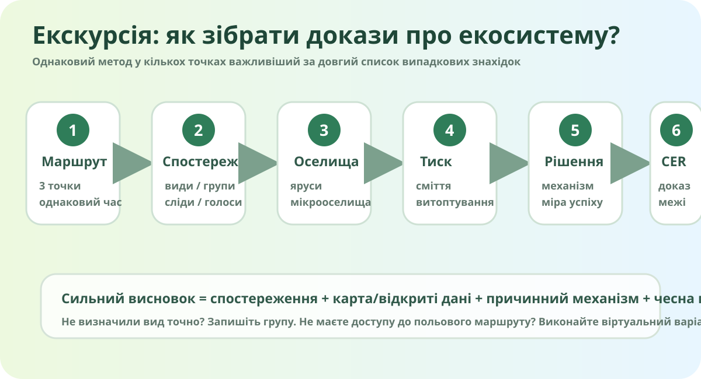

Місія: чи здорова ця екосистема?
Оберіть один безпечний маршрут: шкільна територія, парк, сквер, лісосмуга або віртуальний маршрут за картою та відкритими спостереженнями.

Локальна навчальна схема: маршрут → види/групи → оселища → тиск → рішення. Це не карта і не вимірювання.
Прокладіть маршрут
OpenStreetMap. Збільшіть свою місцевість у повній версії сервісу. Для польової роботи достатньо назви парку/скверу — точну домашню адресу не вводимо.
Три точки замість «я походив і подивився»
- Точка А: більш природна/заросла ділянка.
- Точка B: доглянута або рекреаційна ділянка.
- Точка C: край дороги/стежки або інша зона сильнішого антропогенного впливу.
На кожній точці працюйте приблизно однаковий час. Інакше «більше видів» може означати лише «довше шукали».
Фіксуйте не лише назви видів
Якщо точний вид невідомий — запишіть групу: «жук», «горобцеподібний птах», «злак», «лишайник». Чесне «не визначено» краще за красиву вигадку.
*Для рухливих тварин це кількість спостережених особин/контактів, а не оцінка всієї популяції.
Структура оселища
Ознаки тварин
Тиск людини
Порівняйте точки однаковим правилом
Це навчальний індекс структурної різноманітності, не професійний біотичний індекс. Він потрібен, щоб дисциплінувати спостереження.
Навчальний бал: 50/100
Формула навмисно проста: більше різних груп і мікрооселищ підвищує бал, сильніший тиск знижує. Не використовуйте цей бал як наукову оцінку стану заповідної території.
Що реально означає «більше біорізноманіття»?
Не лише більше назв у списку. Для стійкої екосистеми важливі:
- різноманіття видів;
- структура оселищ і кормова база;
- зв’язність ділянок;
- відсутність надмірного тиску;
- природне відновлення.
Знайдіть механізм, а не винного
Витоптування
Менше рослинного покриву → ущільнення ґрунту → гірша інфільтрація → менше мікрооселищ.
Надмірне косіння
Менше квітучих рослин → менше корму для запилювачів → простіша трофічна мережа.
Фрагментація
Дороги й забудова розділяють оселища → складніше переміщатися й підтримувати обмін між популяціями.
Відновлення — це не «посадити побільше дерев»
Оберіть проблему й рішення, яке змінює саме механізм проблеми.
Польовий висновок
Домашнє завдання
- Опрацюйте §36 електронного підручника.
- Оформіть 1 сторінку «Паспорт ділянки»: карта/скрин карти, 3–5 спостережень, один причинний ланцюг, одне рішення та показник успіху.
- За бажанням перевірте 1–2 знахідки через iNaturalist або GBIF.